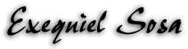

- Puesto en HIJOS
DEL SOL: Guitarrista y Cantante.
- Edad: 23 años.
- Fecha de nacimiento:
9 de Marzo de 1977.
- Signo: Piscis.
- Diestro o Zurdo:
Diestro.
- Pelicula favorita:
"Tiempos violentos".
- Ultimo libro leido:
"Cronicas marcianas" de Ray Bradbury.
- Canción
que quiero que toquen en mi funeral: "Anarchy in the U.K.".
- Canción favorita
de HIJOS DEL SOL: La proxima que hagamos.
- Canción
favorita tocada en vivo: Todas.
- Guitarras que usa:
Fender Strat con microfonos Seymour Duncam y Parker Fly Deluxe.
- Banda favorita:
Megadeth.
- Disco Favorito:
"Rust in peace" de Megadeth.
- Canción favorita:
"Tornado of souls" de Megadeth.
- Guitarrista favorito:
Marty Friedman (Megadeth).
- Bajista favorito:
Steve Harris (Iron Maiden).
- Baterista favorito:
Nick Menza (Megadeth), Danny Carey (Tool).
- Cantante favorito:
Bruce Dickinson (Iron Maiden / Solista).
- Compositor favorito:
Dave Mustaine (Megadeth).
- Ultimo disco que
me partio la cabeza: "Aenima" de Tool.
- Mejor show en vivo
que vio: Megadeth en Parque Sarmiento.
- Bandas que detesta:
Muchas.
- Peor disco que compro:
"The X factor" de Iron Maiden (por la desepción).
- Peor show en vivo
que vio: Heroes del silencio en Obras, ¡aburridisimo!.

